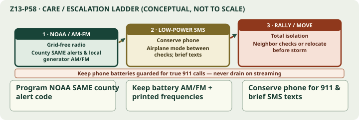

Z13-P58 · Home survival and utilities · New manuscript
Operate layered home outage communications independent of grid Wi-Fi
Receive official weather warnings, evacuation orders, and utility updates reliably when home broadband and local cell towers fail.
When it applies · Multi-day regional blackouts, ice storms, tornadoes, and rural utility disruptions.
Equipment · Battery/hand-crank NOAA Weather Radio with SAME county coding, battery AM/FM radio, power banks, and written local station/contact sheet.

Actions
- Program a battery-backed NOAA Weather Radio with your exact county SAME code so it wakes the household automatically for severe weather or civil warnings while conserving batteries in standby mode.[T15, U16]
- Keep a simple battery AM/FM radio tuned to local emergency-alert broadcast stations (which commonly maintain multi-day studio/transmitter backup generators) alongside printed frequency cards.[U16, T14]
- Preserve smartphone battery aggressively (airplane mode between scheduled check-ins, dimmed screen, text SMS instead of streaming video) so phones stay alive for true 911 emergencies and brief family text check-ins.[U16, D13]
Failure recognition · Draining every family smartphone to 0% scrolling social media during the first four hours of a three-day winter blackout.[U16, D13]
Verify · Confirm NOAA SAME county code tested, AM/FM station list printed, spare batteries fresh, and phone power-saving discipline agreed.[T15, U16]
Stop or change course · Total communications isolation combined with approaching severe weather or vulnerable household health triggers proactive relocation while roads remain open.[U16, U17]
Evidence and editorial notes
- D13 · FEMA / Ready.gov · Make a Plan (current web edition)
- Section: Communications Outages, SMS Priority, and Out-of-Area Rally Contacts · Conditions: Regional cellular congestion, tower power loss, or internet blackouts
Support: Use short SMS text messages instead of voice calls when cell networks congest, designate an out-of-area contact person to relay family status, establish fixed physical household meeting locations (neighborhood and out-of-town), and monitor battery NOAA/AM-FM radio for official updates.
Limitations: Emergency 911 text availability varies by county; confirm local PSAP capability in advance and keep voice dialing primary where reachable. · Conflicting evidence: None; builds on T11 and U16.
Editorial note: Grounds communications-failure fallback and group accountability cards. · Specialist reviewer: Emergency communications and emergency management
Primary source · checked 2026-11-24 - T14 · FEMA / Ready.gov · Emergency Alerts (current web edition)
- Section: Emergency Alerts > WEA, EAS, and NOAA Weather Radio · Conditions: Receiving time-critical hazard warnings at home or outdoors
Support: Use multiple redundant alert channels—Wireless Emergency Alerts, local opt-in alerts, and battery/crank NOAA Weather Radio—so a single dead phone or tower outage does not eliminate warning reception.
Limitations: Backcountry terrain can block both cellular and VHF weather radio reception. · Conflicting evidence: None; aligns with NOAA-NWR.
Editorial note: Grounds emergency warning redundancy in Z01 communication cards. · Specialist reviewer: Emergency management and communications
Primary source · checked 2026-11-24 - T15 · NOAA NWS · NOAA Weather Radio All Hazards (current web edition)
- Section: NOAA Weather Radio All Hazards > Coverage and Receivers · Conditions: Weather and civil-hazard monitoring across the United States
Support: NOAA Weather Radio broadcasts continuous official warnings directly from NWS offices on VHF frequencies; battery or hand-crank receivers with SAME alerting operate independently of cellular networks.
Limitations: VHF line-of-sight range can be attenuated in deep valleys or dense metal structures; verify local transmitter reception before relying on it. · Conflicting evidence: None; aligns with READY-ALERTS.
Editorial note: Documents offline weather-alert radio capabilities and reception limits. · Specialist reviewer: Meteorology and emergency communications
Primary source · checked 2026-11-24 - U16 · FEMA / Ready.gov · Emergency Alerts (current web edition)
- Section: Household Emergency Communications During Grid and Cell Outages · Conditions: Residential power, internet, and cellular tower disruptions
Support: Maintain a battery/crank NOAA Weather Radio, spare power banks, car-charger backups, written contact cards, and local AM/FM broadcast station lists so warnings and utility restoration updates remain accessible without Wi-Fi or cell data.
Limitations: Cordless landline handsets and VoIP routers fail immediately when house power drops unless separately backed up. · Conflicting evidence: None; links Z13 household comms to Z15 disaster alerts.
Editorial note: Grounds home communications continuity during extended blackouts. · Specialist reviewer: Emergency communications specialist
Primary source · checked 2026-11-24 - U17 · FEMA / Ready.gov · Evacuation (current web edition)
- Section: Household Evacuation Thresholds When Utilities Fail · Conditions: Uninhabitable indoor temperatures, sewage backup, persistent CO alarm, or structural/utility hazard
Support: Establish clear pre-agreed exit triggers to relocate to a warming center, hotel, or relatives BEFORE indoor freezing, carbon monoxide alarms, medical-device battery exhaustion, or impassable blizzard roads trap occupants.
Limitations: Waiting until indoor pipes burst or batteries hit zero removes safe travel options. · Conflicting evidence: None; aligns with T13 and E14.
Editorial note: Defines objective household abandonment thresholds in Z13. · Specialist reviewer: Emergency management and cold-weather operations
Primary source · checked 2026-11-24
Source lineage · NOAA Weather Radio and FEMA Ready.gov Alerts; new manuscript · Classification · New manuscript.